在研 · 2025–
БРФФИ X25B-007 — пиперазиновые производные
Синтез и исследование анальгетической активности новых амидов.
无障碍版本
Лесохимия
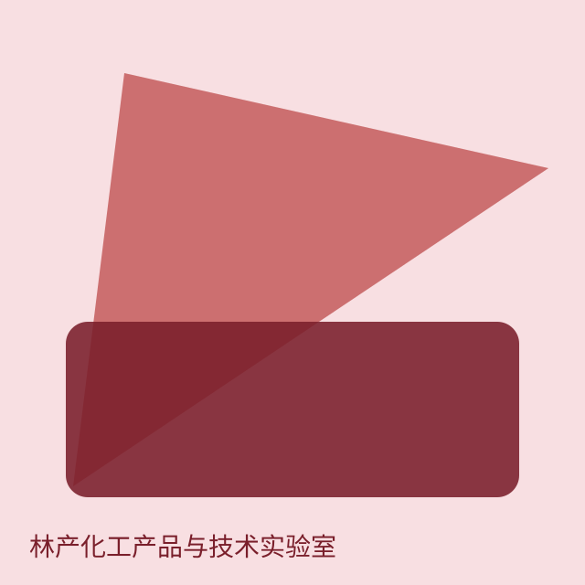
Лесохимия и дитерпены. Рыба этой лаборатории — на букву Д.
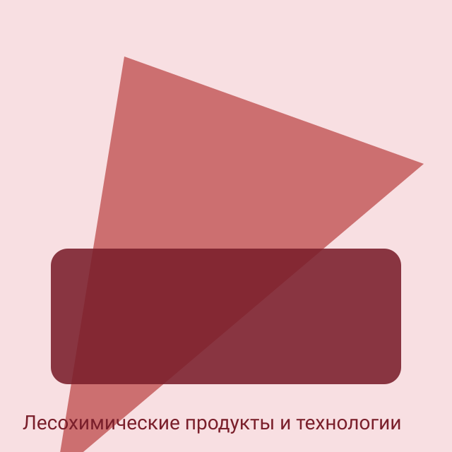
Продукты на основе возобновляемого сырья; переработка терпенов и канифоли.
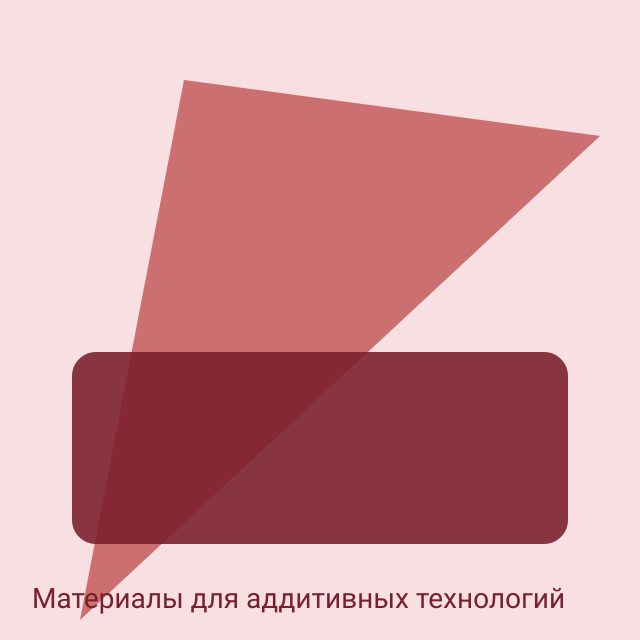
FDM-нити и порошки для селективного лазерного спекания.
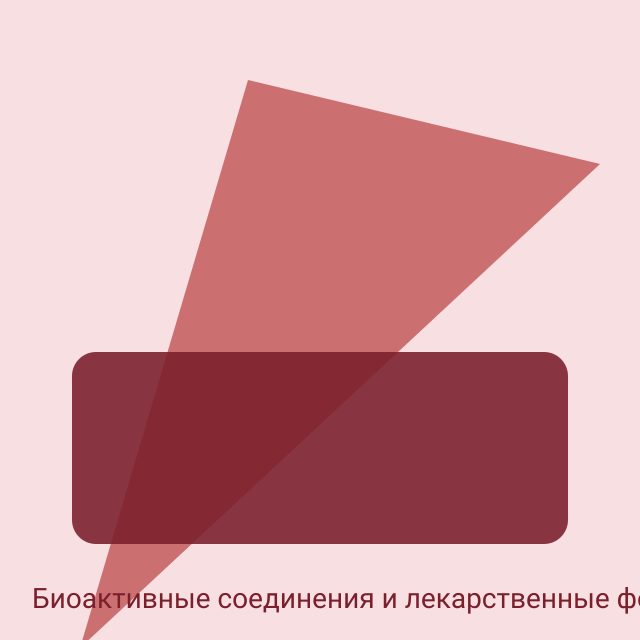
Синтез на основе терпенов; липосомальные формы; анальгетическая активность производных.
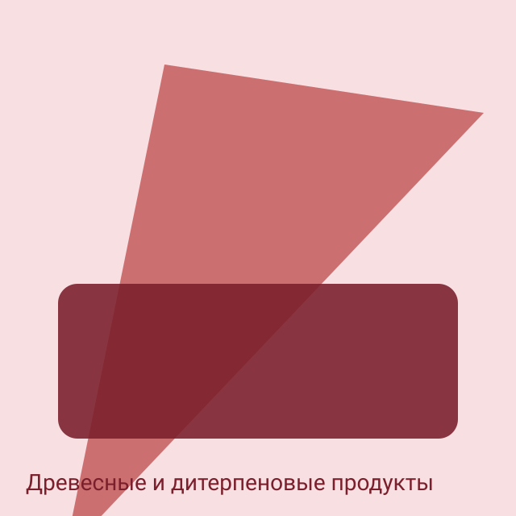
Дистилляция канифоли, древесные отходы, биологически активные дитерпены.
在研 · 2025–
Синтез и исследование анальгетической активности новых амидов.
在研 · 2023–
Каталитический синтез из α-пинена.
在研 · 2024–2026
Биологически активные дитерпены из древесных отходов.
已完成 · 2018–2022
Завершённый проект канифолемалеиновых дисперсий.
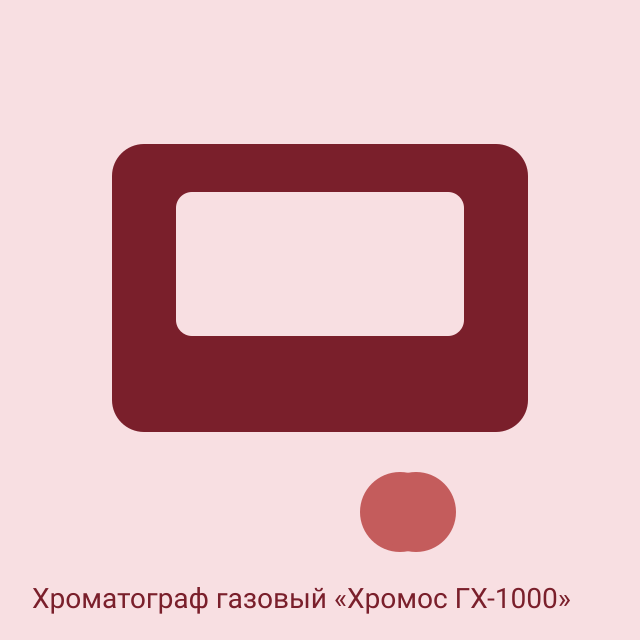
ХРОМОС Инжиниринг, 2025. — Карпинчик Елена Владимировна
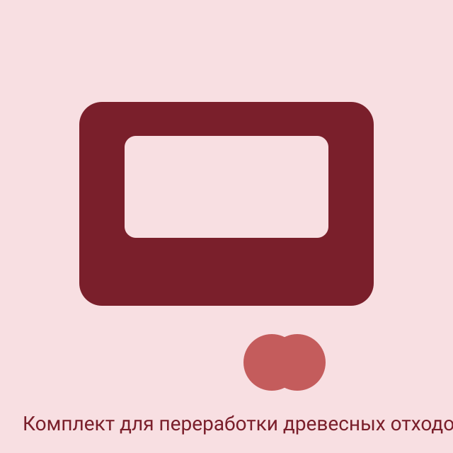
ОАО «НПО Центр», 2022. — Карпинчик Елена Владимировна
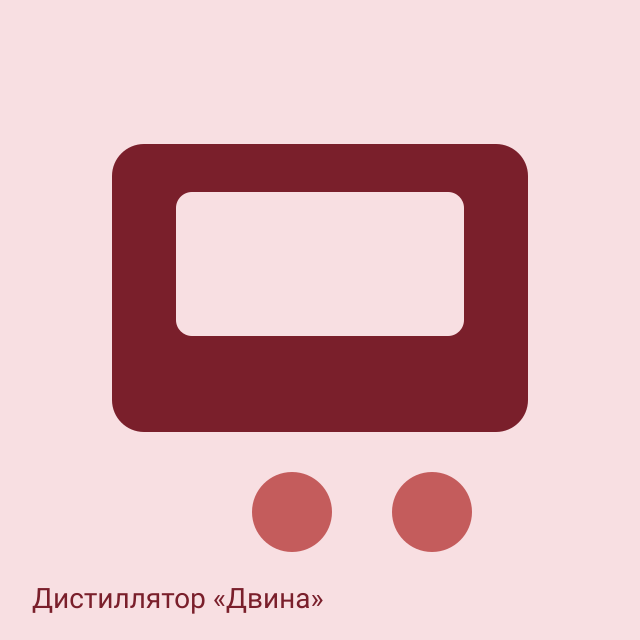
Дробная разгонка лесохимических фракций. — Дорофеев Денис Денисович · +375 (17) 200-04-11 · woodchem-fish-1@ichnm.by
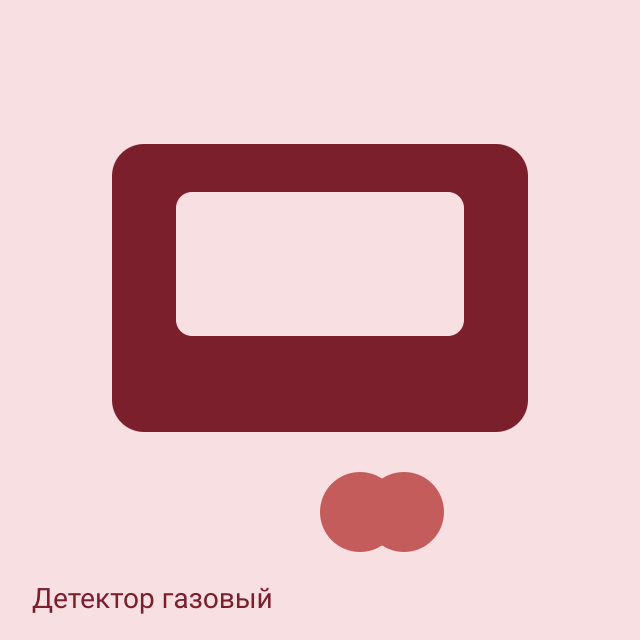
Детектирование органических паров. — Дорофеев Денис Денисович · +375 (17) 200-04-11 · woodchem-fish-1@ichnm.by
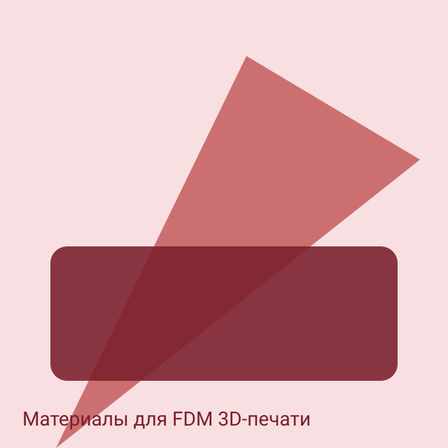
Нити 1,75±0,05 мм на основе ПА-6 с углеродным наполнителем, ПЭТГ, ПЛА. ПТР 12,0 г/мин; усадка 0,6–0,7 %. Выпуск 2023 г.: 1042,77 кг.
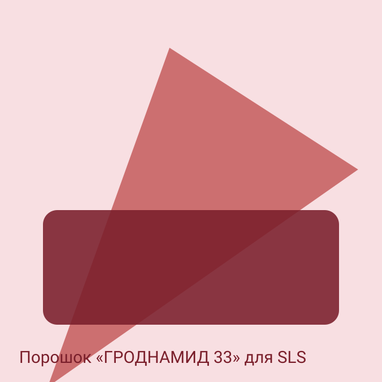
Экспериментальная партия 5 кг (фракция до 160 мкм) передана в ООО «Онсинт» (РФ).
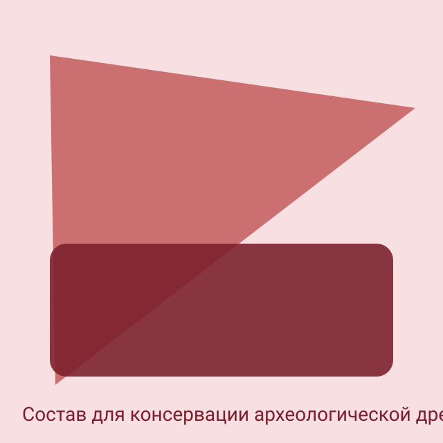
Состав на основе ПГМГ и ПЭГ. Патент РБ № 23956 от 28.02.2023. Совместно с Институтом истории НАН Беларуси; кейс — човн-долблёнка XVI в. из р. Неман (2018).
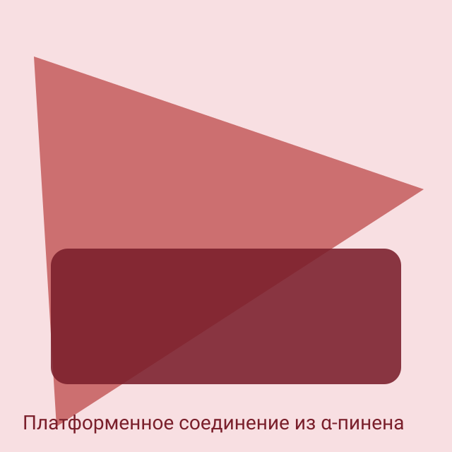
8-ацетокси-6-гидроксиметиллимонен; нанокатализаторы монтмориллонита и галлуазита. Контракт с НИОХ СО РАН X23RNF-028.
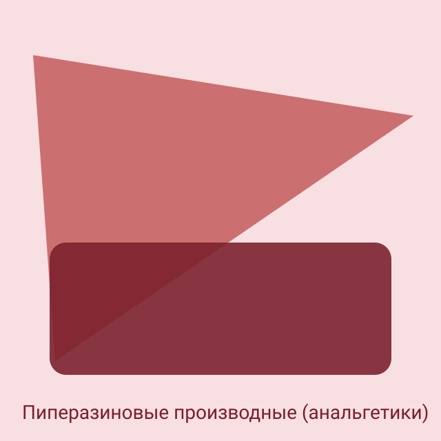
Проект БРФФИ X25B-007: синтез 7 амидов; подтверждённая анальгетическая активность в тестах Tail-flick, Hot-plate и формалиновом; совместно с Институтом физиологии НАН Беларуси.
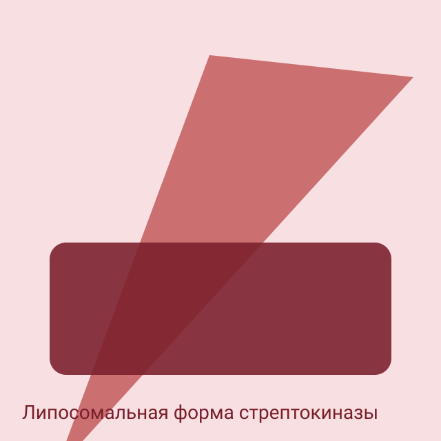
Смесь свободной (66 %) и связанной (34 %) форм; лизис тромбов на 83 % за 2 часа. Модификация антителами к фибрину снижает время лизиса в 2 раза.
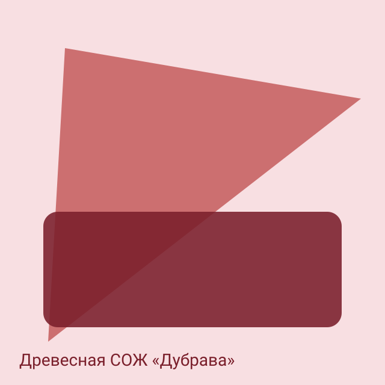
Дисперсии канифолемалеинового аддукта.
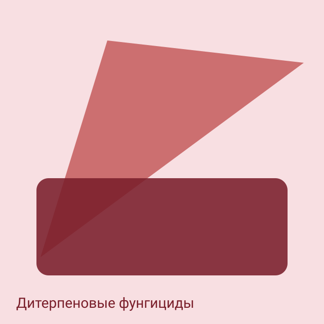
Биоразлагаемые добавки на основе канифоли.
卡片打开个人主页。同一人可隶属多个部门。h 指数和数据库主页在个人页上。
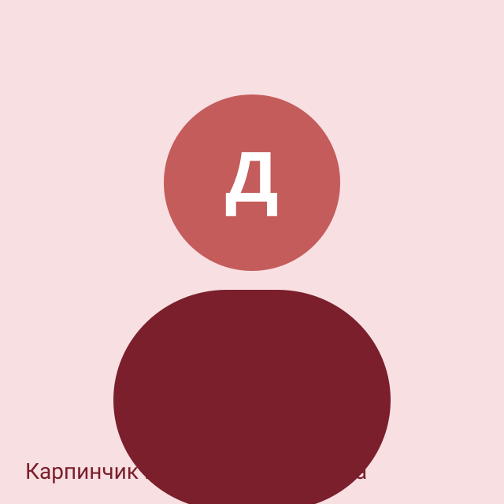
Заведующий лабораторией
Кандидат химических наук
Ведущий научный сотрудник
к.х.н.
Тел. +375 (17) 200-04-10
Научный сотрудник
к.х.н.
Тел. +375 (17) 200-04-11
Научный сотрудник
Тел. +375 (17) 200-04-12
Аспирант
аспирант
Тел. +375 (17) 200-04-13
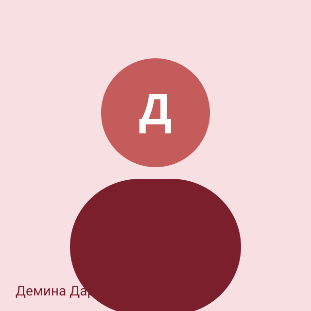
Научный сотрудник
Тел. +375 (17) 200-04-14
地址：220084，明斯克，斯卡里纳大街 36 号
电话 +375 (17) 318-13-11
E-mail: woodchem@ichnm.by
主任：Карпинчик Елена Владимировна
与科学院门户同类：即时列表和单独的结果页。